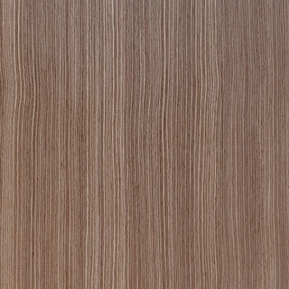
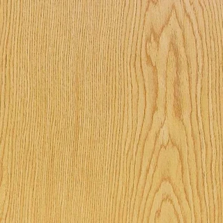

Placa enchapada · Enchapado de nogal rayado
Renders de catálogo. Las imágenes muestran vistas de referencia.
Placa enchapada
La veta como protagonista. Superficies lisas con enchapados de madera natural o reconstituida.
Las opciones elegidas se incluyen en tu consulta. Nuestro equipo te ayuda a definir la combinación y las medidas.
Elegí el marco que
acompaña tu puerta.
Seleccioná un sistema de interés. Confirmamos la combinación según la puerta, la apertura y las medidas de tu proyecto.
Placa enchapada · Marco a definir con asesoramiento
Materiales y terminaciones
Explorá las muestras de referencia y elegí una terminación en las opciones de consulta.


- Nogal floreado · madera reconstituida
- Nogal rayado · madera reconstituida
- Roble floreado · madera reconstituida
- Roble rayado · madera reconstituida
- Ébano · madera reconstituida
- Gris decape · madera reconstituida
- Nogal floreado · madera natural
- Roble floreado · madera natural
- Roble rayado · madera natural
Los tonos y las vetas pueden variar. Consultá las muestras físicas al definir tu puerta.
Configuraciones de apertura
- Simple
- Doble
- Simple con paño superior fijo
- Corrediza simple
- Corrediza doble
- Puerta y media
Composición de la hoja
- Bastidor perimetral de pino finger
- Núcleo de poliestireno expandido (telgopor)
- Caras de MDF de 9 mm preparadas para enchapado o laqueado
- Espesor de hoja de 44 o 58 mm según sistema de marco
Marcos y compatibilidad
El sistema de marco se define junto con la línea, la terminación y las condiciones de obra. Nuestro equipo comercial te ayuda a confirmar la compatibilidad.
Conocé los sistemas y revisá sus fichas antes de definir tu proyecto.
Explorá los sistemas de marcosMedidas y especificaciones
- Alto máximo de hoja: 2750 mm en enchapados de madera reconstituida.
- Alto máximo de hoja: 2900 mm en enchapados de madera natural.
Estos máximos corresponden al material de la hoja. La medida final depende de la configuración y del sistema de marco.
La medida de hoja, la medida de paso y la abertura libre de mampostería son diferentes. Consultá las tablas del sistema elegido.
Consultá las medidas por sistemaDocumentación técnica
Puerta Placa
Enchapada y pintada
También podés consultar la biblioteca general de sistemas de marcos.
Todos los recursos técnicos